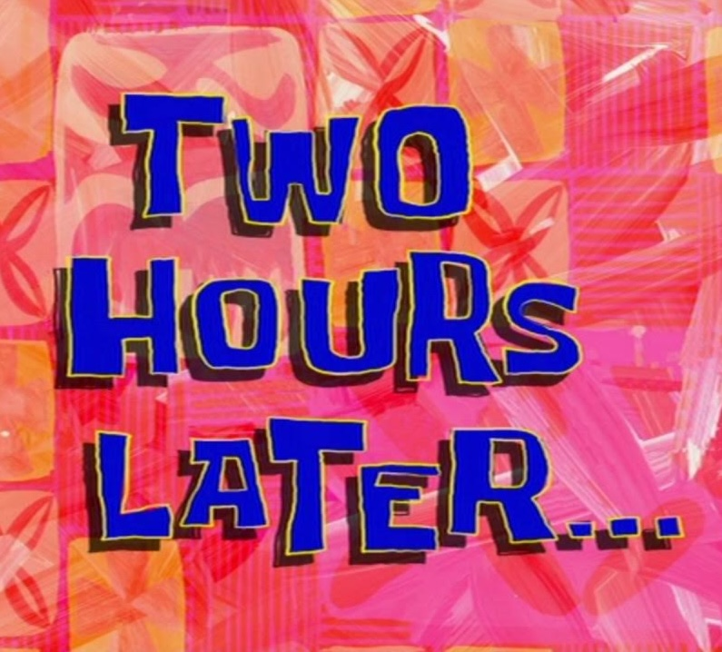

Induction: The Core “Way of Thinking” for Algorithm Design…
Jeff has messed up the “intuitive” explanation for Gauss’ Sum on the board every semester since 2010
Most years this is a problem…
But this year it’s an opportunity to teach induction!
The Intuition
(What I should have done on the board)
\(\Rightarrow \displaystyle\sum_{i=1}^{6} = \frac{6(6+1)}{2}\) …but can we infer \(\displaystyle \sum_{i=1}^{n} = \frac{n(n+1)}{2}\)? Not in general!
(When you do it’s called “Engineer’s induction”… see next slide)
(Double no in this case since we assumed \(n\) even!)
But, with only slight increase in complicated-ness, can prove it by induction, which is used in… 95% of algorithm/data structures proofs! (We’ll see why)
What’s Wrong With Engineers’ Induction?
What if I told you, I have a simple polynomial that we can use to infinitely generate prime numbers!\(\boxed{f(n) = n^2 + n + 41}\)… Let’s try it!
\(n\)
\(f(n)\)
Prime?
0
41
✅
1
43
✅
2
47
✅
3
53
✅
\(\vdots\)
\(\vdots\)
✅

\(n\)
\(f(n)\)
Prime?
38
1523
✅
I can stop checking now right?
39
1601
✅
Surely I’ve checked enough terms?
40
1681
❌ \(1681 = 41 \times 41\) 💀
Maybe that’s the only exception?
41
1763
❌ \(1763 = 41 \times 43\) 💀
Maybe we can get composites\(n > 41\)?
42
1847
✅ 💀💀💀 USELESS!
(Non-Engineers’) Induction!
Goal: Prove \(p(n)\) (“predicate”, evaluates to T/F for given \(n \in \mathbb{Z}^{\geq 0}\))
The core is literally just: If I know
Base Case: [\(p\) is true for \(n = n_0\)]
Inductive Step: [\(p\) is true for \(n\)] \(\implies\) [\(p\) is true for \(n + 1\)]
Then I can conclude \(p(n)\)true for all \(n \geq 1\)!
Warning: node None_0, port f1 unrecognized
Warning: node None_1, port f1 unrecognized
Warning: node None_2, port f1 unrecognized
Warning: node None_3, port f1 unrecognized
Warning: node None_4, port f1 unrecognized
Warning: node None_5, port f1 unrecognized
So Then… Why Is This a Whole Class?
The core structures are identical, but we can optimize different goals (efficient insertion, sorting, retrieval, deletion, …) by changing the invariants maintained by the algorithms internal to our structure
Crucial Insertion-Sort invariant: \(\textsf{Sorted}(1,i)\) true when we move to entry \(i + 1\) (key)
Crucial HW2(!) invariant: \(\textsf{Up-To-Date-Favorite}(1,i-1)\) true when entry \(i + 1\) (next result in dataset) arrives
\(\implies\) Efficiency of obtaining favorite style guaranteed to be constant-time, \(\overline{O}(1)\)!
Otherwise, would be \(\overline{O}(n) > \overline{O}(1)\) (linear approach) or at best \(\overline{O}(\log_2(n)) > \overline{O}(1)\) (divide-and-conquer)